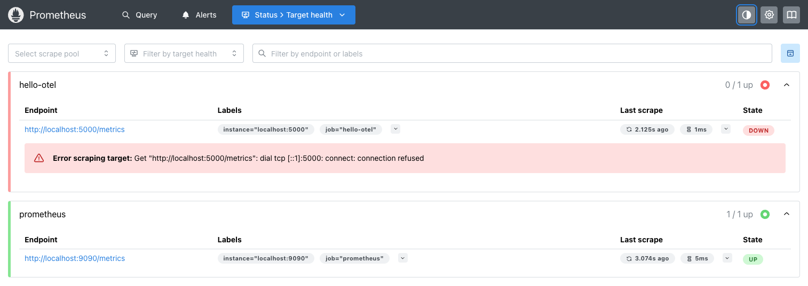
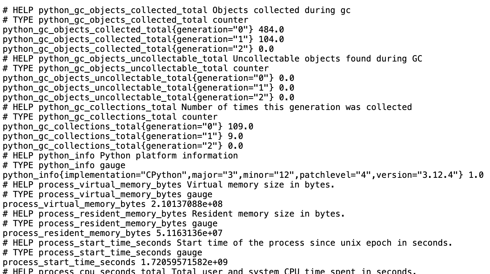
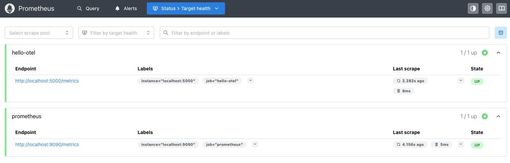
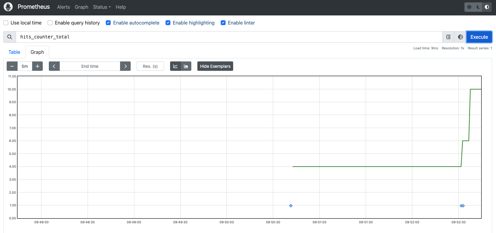
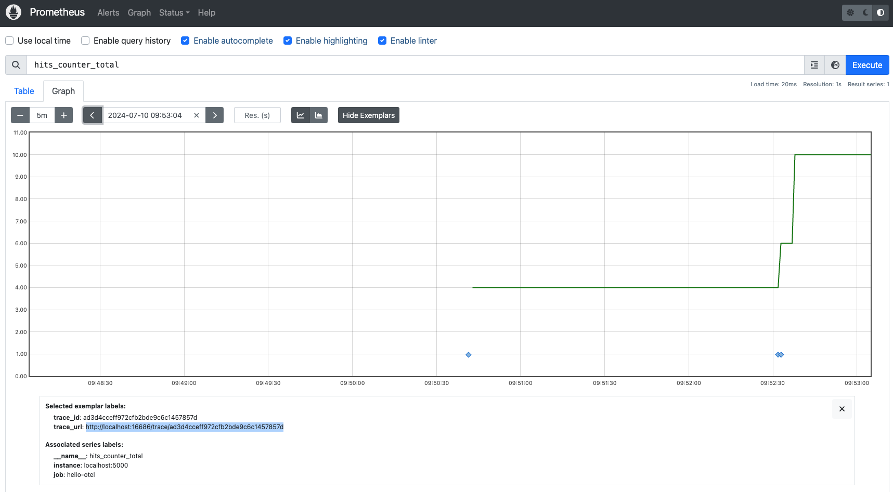
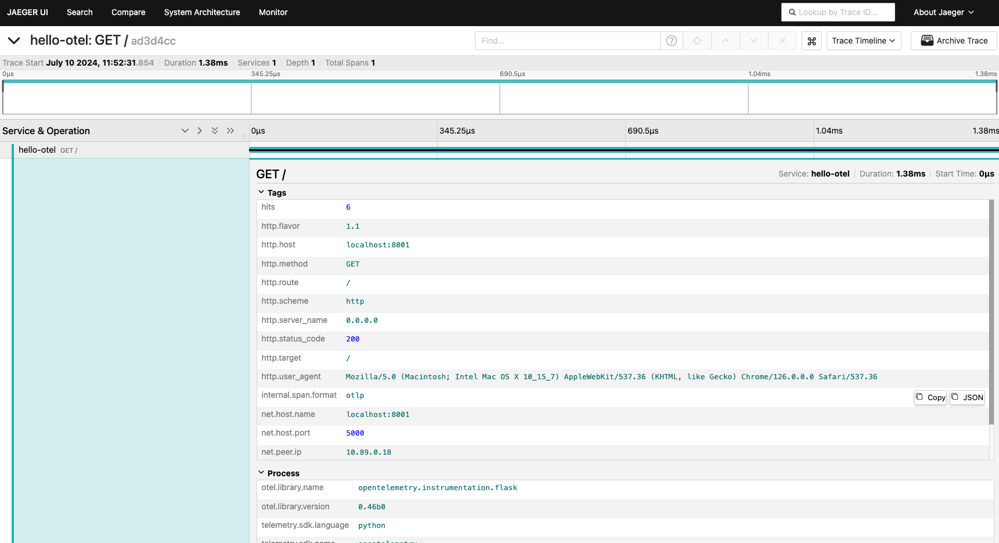

Traces & metrics - Rancher k3s prerequisites
This path builds the images with Podman and runs
them on a local Rancher Desktop k3s
cluster, with
kubectl and nerdctl on your PATH. Start Rancher Desktop
if it is not already running:
$ rdctl start
- In Preferences → Kubernetes, confirm "Enable Kubernetes" is checked (k3s)
- In Container Engine, confirm "containerd" is selected
- Wait for the status indicator to turn green and show "Kubernetes is running"
Traces & metrics - Verifying the cluster
Confirm the cluster is up and
kubectl is pointed at it (versions shown might
differ for you):
$ kubectl config current-context
rancher-desktop
$ kubectl get nodes
NAME STATUS ROLES AGE VERSION
lima-rancher-desktop Ready control-plane,master 2d v1.36.2+k3s1
This lab binds host ports 8001, 9090 and 16686. If
kubectl get
pods lists a pod left over from other work, delete it first with kubectl delete
pod <name> - two pods cannot claim the same host port on a single node.
Traces & metrics - What's an exemplar?
Exemplars are the way to connect traces to metrics allowing you to jump from "hey what's that weird spike?" on a metric chart
directly to a trace associated with that context with one click!
Traces & metrics - Open source metrics
- OpenTelemetry - Metrics SDK is marked as "mixed" and under active development. Python SDK does not yet support exemplars.
- Prometheus - Stable APIs, extensive ecosystem of instrumented libraries and dashboards.
Our goal is to tie metrics with traces via exemplars, so we'll instrument metrics with Prometheus and keep
traces instrumented with OpenTelemetry!
Traces & metrics - Prometheus config file
In the
metrics/prometheus directory you can view the config file named
prometheus.yml:
global:
scrape_interval: 5s
scrape_configs:
- job_name: "prometheus"
static_configs:
- targets: ["localhost:9090"]
Normally you monitor other targets over HTTP and scrape their endpoints, but we are
going to start with Prometheus itself. The scrape_configs section is where you tell Prometheus which targets to
scrape to collect metrics from.
Traces & metrics - Building Prometheus for k3s
Podman builds the image locally, but k3s runs inside Rancher Desktop's own VM with a separate
containerd image store, so the image has to be exported and loaded into the VM's
k8s.io namespace where kubelet looks for it. You will repeat this save/load
step every time you rebuild an image in this lab:
$ podman build -t workshop-prometheus:v3.13.1 -f ./metrics/prometheus/Buildfile-prom
$ podman save localhost/workshop-prometheus:v3.13.1 -o workshop-prometheus.tar
$ nerdctl --namespace k8s.io load -i workshop-prometheus.tar
Loaded image: localhost/workshop-prometheus:v3.13.1
Note: if
nerdctl fails with "cannot access containerd socket", your Container
Engine is set to dockerd instead of containerd - either switch it in Preferences, or
use docker load -i workshop-prometheus.tar for every import in this lab.
Traces & metrics - Running Prometheus on k3s
Run it as a throwaway pod. No arguments are needed - the image's own
CMD already
carries --config.file and --enable-feature=exemplar-storage,old-ui.
port-forward holds its terminal, so leave it running:
$ kubectl run prometheus --image=localhost/workshop-prometheus:v3.13.1 \
--image-pull-policy=Never --port=9090
pod/prometheus created
$ kubectl wait --for=condition=Ready pod/prometheus --timeout=120s
pod/prometheus condition met
$ kubectl port-forward pod/prometheus 9090:9090
Forwarding from 127.0.0.1:9090 -> 9090
Forwarding from [::1]:9090 -> 9090
Verify our targets are configured by opening the targets page in the Prometheus console at
http://localhost:9090/targets,
noting that Prometheus is scraping itself and waiting for the hello-otel
application to come online:

Traces & metrics - Deleting the Prometheus pod
Stop the
port-forward with CTRL-C and delete the pod, as we
will later run the application and metrics collection tooling together in a single pod:
$ kubectl delete pod prometheus
pod "prometheus" deleted
Traces & Metrics - Using Prometheus metrics
Let's use the
prometheus-flask-exporter and
see what metrics we get out of the box.
Traces & metrics - Modifying the build
Open metrics/Buildfile-metrics and ensure the command to install the
prometheus_flask_exporter has been added:
FROM python:3.13-bullseye
WORKDIR /app
COPY requirements.txt requirements.txt
RUN pip install -r requirements.txt
RUN pip install opentelemetry-api==1.44.0 \
opentelemetry-sdk==1.44.0 \
opentelemetry-exporter-otlp==1.44.0 \
opentelemetry-instrumentation-flask==0.65b0 \
opentelemetry-instrumentation-jinja2==0.65b0 \
opentelemetry-instrumentation-requests==0.65b0 \
prometheus-flask-exporter
COPY . .
CMD [ "flask", "run", "--host=0.0.0.0"]
Traces & metrics - Adding imports
Open the file
metrics/app.py and ensure the imports include the line
using the prometheus-flask-exporter to import
PrometheusMetrics as shown:
from opentelemetry.trace import set_tracer_provider
from opentelemetry.sdk.trace import TracerProvider
from opentelemetry.sdk.trace.export import SimpleSpanProcessor
from opentelemetry.exporter.otlp.proto.http.trace_exporter import OTLPSpanExporter
from opentelemetry.instrumentation.flask import FlaskInstrumentor
from opentelemetry.instrumentation.jinja2 import Jinja2Instrumentor
from opentelemetry.instrumentation.requests import RequestsInstrumentor
from prometheus_flask_exporter import PrometheusMetrics
Traces & metrics - Instrument Prometheus Flask metrics
Continue down the file
metrics/app.py and verify that the programmatic Flask
metric instrumentation has been added as shown:
provider = TracerProvider()
processor = SimpleSpanProcessor(OTLPSpanExporter(endpoint="http://localhost:4318/v1/traces"))
provider.add_span_processor(processor)
set_tracer_provider(provider)
app = Flask("hello-otel")
FlaskInstrumentor().instrument_app(app)
Jinja2Instrumentor().instrument()
RequestsInstrumentor().instrument()
metrics = PrometheusMetrics(app)
Traces & metrics - Building the app image for k3s
Build the application image and load it into the cluster's containerd store:
$ podman build -t hello-otel:metrics -f metrics/Buildfile-metrics
$ podman save localhost/hello-otel:metrics -o hello-otel-metrics.tar
$ nerdctl --namespace k8s.io load -i hello-otel-metrics.tar
Loaded image: localhost/hello-otel:metrics
Traces & metrics - Run the pod on k3s
Apply the pod with the app, Prometheus and Jaeger. The Jaeger image is pulled from the
registry, so the pod sits Pending for a while -
kubectl wait blocks until
all three containers are ready, otherwise port-forward fails with "unable to
forward port because pod is not running". Note port-forward holds its terminal and
dies with the pod, so it is restarted after every rebuild:
$ kubectl delete -f metrics/app-prom-pod.yml --ignore-not-found
$ kubectl apply -f metrics/app-prom-pod.yml
pod/hello-otel-metrics created
$ kubectl wait --for=condition=Ready pod/hello-otel-metrics --timeout=180s
pod/hello-otel-metrics condition met
$ kubectl port-forward pod/hello-otel-metrics 8001:5000 9090:9090 16686:16686
In a second terminal or a browser, make several requests to the pages below:
Traces & metrics - Verifying Flask metrics
Prometheus uses a pull-model where a Prometheus server scrapes a
/metric
endpoint. Let's check our metrics endpoint to verify that the
prometheus-flask-exporter is working. Open
http://localhost:8001/metrics and confirm you see
metrics prefixed with flask_* and python_*:

Traces & metrics - Verifying targets up in Prometheus
Verify our targets are up and being scraped by opening the targets page in the Prometheus
console at
http://localhost:9090/targets,
noting that Prometheus is scraping itself and now also the hello-otel
application (with the status UP):

Traces & metrics - Deleting the pod
Stop the
port-forward with CTRL-C and delete the pod, so that we can start adding
our exemplars to explore a journey from metrics to traces:
$ kubectl delete -f metrics/app-prom-pod.yml
pod "hello-otel-metrics" deleted
Traces & metrics - Updating Prometheus configuration
We start by adding exemplars to our Prometheus metrics which will be tying in our traces from
OpenTelemetry. Open up the
metrics/prometheus/prometheus.yml file, add or
ensure there is a scrape job defined for the hello-otel application as
shown, and save the file:
global:
scrape_interval: 5s
scrape_configs:
- job_name: "prometheus"
static_configs:
- targets: ["localhost:9090"]
- job_name: "hello-otel"
static_configs:
- targets: ["localhost:5000"]
Traces & metrics - Updating Prometheus build file
Open up the
metrics/prometheus/Buildfile-prom and ensure the CMD enables
both features shown below. exemplar-storage lets Prometheus store the exemplars we
are about to emit, and old-ui is needed because the Prometheus 3.x web UI dropped
exemplar rendering on graphs - it falls back to the 2.x UI, which can still plot them:
FROM prom/prometheus:v3.13.1
ADD prometheus.yml /etc/prometheus
ENTRYPOINT [ "prometheus" ]
CMD [ "--config.file=/etc/prometheus/prometheus.yml", "--enable-feature=exemplar-storage,old-ui" ]
Traces & metrics - Rebuilding Prometheus for k3s
Rebuild the image and load it into the cluster again so the new config is picked up:
$ podman build -t workshop-prometheus:v3.13.1 -f metrics/prometheus/Buildfile-prom
$ podman save localhost/workshop-prometheus:v3.13.1 -o workshop-prometheus.tar
$ nerdctl --namespace k8s.io load -i workshop-prometheus.tar
Loaded image: localhost/workshop-prometheus:v3.13.1
Traces & metrics - Updating imports
Open metrics/app.py and ensure the import for the
Counter
metric from Prometheus Client has been added as shown:
import random
import re
import urllib3
import requests
from flask import Flask, render_template, request
from breeds import breeds
from opentelemetry.trace import set_tracer_provider
from opentelemetry.sdk.trace import TracerProvider
from opentelemetry.sdk.trace.export import SimpleSpanProcessor
from opentelemetry.exporter.otlp.proto.http.trace_exporter import OTLPSpanExporter
from opentelemetry.instrumentation.flask import FlaskInstrumentor
from opentelemetry.instrumentation.jinja2 import Jinja2Instrumentor
from opentelemetry.instrumentation.requests import RequestsInstrumentor
from prometheus_flask_exporter import PrometheusMetrics
from prometheus_client import Counter
Traces & metrics - Create a counter
In the same file metrics/app.py ensure that a counter for the number of
homepage loads is added as shown:
provider = TracerProvider()
processor = SimpleSpanProcessor(OTLPSpanExporter(endpoint="http://localhost:4318/v1/traces"))
provider.add_span_processor(processor)
set_tracer_provider(provider)
app = Flask("hello-otel")
FlaskInstrumentor().instrument_app(app)
Jinja2Instrumentor().instrument()
RequestsInstrumentor().instrument()
metrics = PrometheusMetrics(app)
HITS_COUNTER = Counter('hits_counter', 'count of homepage loads')
...
Traces & metrics - Increment the counter
Continuing down in the same file, ensure code is added in the
index() to
increment (increase) the hits_counter and configure
exemplars to attach to the metric as shown. Save the file when done:
@app.route('/')
def index():
global HITS
span = trace.get_current_span()
trace_id = '{:032x}'.format(span.get_span_context().trace_id)
HITS = HITS + 1
span.set_attribute("hits", HITS)
HITS_COUNTER.inc(1, exemplar={"trace_id": trace_id, "trace_url": f"http://localhost:16686/trace/{trace_id}"})
msg = f'This webpage has been viewed {HITS} times'
return msg
...
Traces & metrics - Updating app image
Open
metrics/Buildfile-metrics and ensure the command to install
prometheus_flask_exporter is added as shown:
FROM python:3.13-bullseye
WORKDIR /app
COPY requirements.txt requirements.txt
RUN pip install -r requirements.txt
RUN pip install opentelemetry-api==1.44.0 \
opentelemetry-sdk==1.44.0 \
opentelemetry-exporter-otlp==1.44.0 \
opentelemetry-instrumentation-flask==0.65b0 \
opentelemetry-instrumentation-jinja2==0.65b0 \
opentelemetry-instrumentation-requests==0.65b0 \
prometheus-flask-exporter
COPY . .
CMD [ "flask", "run", "--host=0.0.0.0"]
Traces & metrics - Rebuild the app image for k3s
Rebuild the application image and load it into the cluster again:
$ podman build -t hello-otel:metrics -f metrics/Buildfile-metrics
$ podman save localhost/hello-otel:metrics -o hello-otel-metrics.tar
$ nerdctl --namespace k8s.io load -i hello-otel-metrics.tar
Loaded image: localhost/hello-otel:metrics
Traces & metrics - Running the pod on k3s
Apply the pod again, wait for it to be ready, then forward all three ports:
$ kubectl delete -f metrics/app-prom-pod.yml --ignore-not-found
$ kubectl apply -f metrics/app-prom-pod.yml
pod/hello-otel-metrics created
$ kubectl wait --for=condition=Ready pod/hello-otel-metrics --timeout=180s
pod/hello-otel-metrics condition met
$ kubectl port-forward pod/hello-otel-metrics 8001:5000 9090:9090 16686:16686
In a second terminal or a browser, make several requests (over time, refresh to generate more
in the resulting graph on the next slide) to the homepage:
Traces & metrics - Verify exemplars
Open the Prometheus console in your browser
http://localhost:9090
and query hits_counter_total in Graph view. Select by clicking on the
Show Exemplars button in the middle to see them as little blue diamonds (note
you need to reduce the time window down to 5 minutes or so to see a graph plots):

Traces & metrics - From metric to trace
Click on one of the exemplars (blue dot) on the chart and copy the
trace_url i
nto a new browser tab:

Traces & metrics - Verify exemplars
Ta-da! You should see the trace waterfall for one of the requests made:

Traces & metrics - Deleting the pod
Let's clean up by stopping the
port-forward with CTRL-C and deleting the pod:
$ kubectl delete -f metrics/app-prom-pod.yml
pod "hello-otel-metrics" deleted
Lab completed - Results
We reviewed the concept of exemplars and one way approach to linking Prometheus native metrics to OpenTelemetry traces!

Contact – are there any questions?
Eric D. Schabell
Technology Advocate Lead
Contact: @ericschabell {@fosstodon.org) or https://www.schabell.org
Technology Advocate Lead
Contact: @ericschabell {@fosstodon.org) or https://www.schabell.org